주택관리사보-1차 (2012-07-15 기출문제)
1과목: 민법
1. 민법상 권리능력에 관한 설명으로 옳은 것은? (다툼이 있으면 판례에 의함)
- 사람만이 권리능력을 갖는다.
- 사람은 사망함으로써 권리능력을 상실하므로 사망자의 명예는 보호되지 않는다.
- 의사의 과실로 태내에서 사망한 태아는 그 의사에 대하여 손해배상청구권을 취득하지 못한다.
- 의사무능력자는 권리무능력자이다.
- 실종선고는 실종자의 권리능력을 박하는 제도이다.
(정답률: 34%)

2. 권리가 충돌할 때 우선순위에 관한 설명으로 옳지 않은 것은? (문제 오류로 실제 시험에서는 3, 5번이 정답처리 되었습니다. 여기서는 3번을 누르면 정답 처리 됩니다.)
- 소유권과 제한물권이 충돌하면 성질상 제한물권이 언제나 우선한다.
- 양립 가능한 제한물권과 제한물권이 충돌하면 먼저 성립한 물권이 언제나 우선한다.
- 동일한 물건에 대하여 채권과 나중에 성립한 물권이 충돌하면 채권이 대항력을 갖추지 않은 이상 물권이 언제나 우선한다.
- 법률에 달리 정함이 없는 한, 수 개의 채권은 그 발생원인ㆍ발생시기ㆍ채권액에 상관없이 순위에 우열이 없다.
- 수 개의 채권이 충돌하여 그 전부를 만족시키기에는 채무자의 재산이 부족한 경우, 채무자는 각 채권액에 안분비례하여 공평하게 변제하여야 한다.
(정답률: 34%)
3. 민법의 법원(法源)에 관한 설명으로 옳지 않은 것은? (다툼이 있으면 판례에 의함)
- 대법원이 제정한 규칙도 민사에 관한 것이면 민법의 법원이 될 수 있다.
- 사실인 관습은 사회생활규범일 뿐 법규범이 아니기 때문에 민법의 법원으로 인정되지 않는다.
- 상급법원의 재판에서의 판단은 이와 유사한 장래의 다른 사건을 재판함에 있어서 하급심을 기속한다.
- 관행이 관습법으로 인정되기 위해서는 헌법을 최상위 규범으로 하는 전체 법질서에 반하지 않아야 한다.
- 가치관 등의 변천으로 기존 관습법의 효력이 부정되면 그 관습법에 의해 규율되던 영역은 조리에 의하여 보충된다.
(정답률: 34%)
4. 권리자의 일방적 의사표시로 법률관계의 변동을 일으키는 권리가 아닌 것은? (다툼이 있으면 판례에 의함)
- 공유자의 공유물분할청구권
- 지상권자의 지료증감청구권
- 지상권설정자의 지상물매수청구권
- 건물임차인의 부속물매수청구권
- 부동산공사수급인의 저당권설정청구권
(정답률: 23%)
5. 신의성실의 원칙(신의칙)에 관한 설명으로 옳지 않은 것은? (다툼이 있으면 판례에 의함)
- 권리행사와 의무이행이 신의칙에 반하는 것은 당사자의 주장이 없더라도 법원이 직권으로 판단할 수 있다.
- 본인을 상속한 무권대리인이 본인의 지위에서 무권대리의 추인을 거절하는 것은 신의칙상 허용되지 않는다.
- 아파트 분양자는 아파트단지 인근에 공동묘지가 조성되어 있는 사실을 수분양자에게 고지할 신의칙상의 의무를 부담한다.
- 법정대리인의 동의 없이 신용구매계약을 체결한 미성년자가 나중에 법정대리인의 동의 없음을 이유로 이를 취소하는 것은 신의칙에 반한다.
- 강행규정에 위반하는 계약임을 알면서도 이를 체결한 자가 나중에 그 강행규정 위반을 이유로 당해 계약의 무효를 주장하는 것은 원칙적으로 신의칙 위반이 아니다.
(정답률: 34%)
6. 다음 중 행위무능력자는?
- 혼인한 미성년자
- 혼인한 한정치산자
- 외국에 유학 중인 도박 습성 있는 성인 남자
- 한국말을 전혀 못하는 28세의 일본인 근로자
- 실종선고 후 살아 돌아왔으나, 아직 그 선고가 취소되지 않은 성인 남자
(정답률: 25%)
7. 甲은 친구 아들인 미성년자 乙에게 토지 구입을 위임하고 대리권을 수여하였다. 乙은 甲을 대리하여 丙소유의 토지를 구입하였으나, 이 과정에서 丙이 乙을 기망하였다. 다음 설명 중 옳지 않은 것은?
- 甲은 乙의 행위무능력을 이유로 매매계약을 취소하지 못한다.
- 乙은 법정대리인의 동의가 없었다면 행위무능력을 이유로 위임계약을 취소할 수 있다.
- 甲과 乙이 위임계약을 합의해지하더라도 매매계약의 효과는 甲에게 귀속한다.
- 사기를 이유로 매매계약이 취소될 수 있는지 여부는 甲을 기준으로 하여 결정한다.
- 사기를 이유로 매매계약이 취소되면 甲과 丙 사이에 부당이득반환의무가 발생한다.
(정답률: 19%)
8. 법률행위의 종류 또는 그 효과에 관한 설명으로 옳은 것은?
- 채권자는 단독행위로 채무를 면제할 수 없다.
- 처분권 없는 자의 물권행위는 무효이다.
- 준물권행위는 이행의 문제를 남기므로 물권행위와 구별된다.
- 방식을 갖추지 않은 요식행위는 원시적 불능으로 무효이다.
- 출연행위는 모두 유상행위이다.
(정답률: 28%)
9. 甲은 대리인 乙을 통해 자신의 X부동산을 丙에게 매도하였고, 丙은 이를 다시 丁에게 전매하였다. 그런데 甲은 丙과의 매매계약이 불공정한 법률행위로서 무효임을 주장하고 있다. 다음 설명 중 옳지 않은 것은? (다툼이 있으면 판례에 의함)
- 불공정한 법률행위인지의 여부를 판단하는 기준 시기는 乙이 丙과 매매계약을 체결한 당시이다.
- 丙에게 궁박, 경솔 또는 무경험을 이용하고자 하는 의사가 없다면 불공정한 법률행위는 성립하지 않는다.
- 경솔, 무경험은 乙을 기준으로, 궁박 상태에 있었는지 여부는 甲을 기준으로 판단한다.
- 甲과 丙 사이의 매매계약이 불공정한 법률행위로서 무효가 되더라도 甲은 선의의 丁에게 대항할 수 없다.
- 불공정한 법률행위로서 무효인 경우에는 그 후 甲이 추인하더라도 매매계약이 유효로 될 수 없다.
(정답률: 32%)
10. 甲은 X부동산을 乙에게 매도하고 소유권이전등기를 해 주었다. 乙은 丙으로부터 금전을 차용하면서 X부동산에 丙을 위한 저당권을 설정하였다. 이에 관한 설명으로 옳은 것은? (다툼이 있으면 판례에 의함)
- 甲과 乙 사이의 매매계약은 법률요건이고, 그로 인한 乙의 소유권이전등기청구권은 법률효과에 해당한다.
- 乙의 소유권 취득은 포괄승계에 해당한다.
- 丙의 저당권 취득은 이전적 승계에 해당한다.
- 乙의 저당권 설정은 준법률행위에 해당한다.
- 乙의 저당권 설정은 소유권의 질적 변경에 해당한다.
(정답률: 22%)
11. 의사표시의 효력에 관한 설명으로 옳지 않은 것은? (다툼이 있으면 판례에 의함)
- 상대방 있는 의사표시는 그 통지가 상대방에게 도달한 때에 그 효력이 발생한다.
- 표의자가 의사표시의 통지를 발송한 후 사망한 경우, 그 의사표시는 효력을 상실한다.
- 격지자간의 계약은 승낙의 통지를 발송한 때에 성립한다.
- 표의자는 의사표시의 발송 후에도 도달 전에는 그 의사표시를 철회할 수 있다.
- 내용증명우편이나 등기우편과는 달리, 보통우편의 방법으로 발송되었다는 사실만으로는 그 우편물이 상당기간 내에 도달하였다고 추정할 수 없다.
(정답률: 45%)
12. 진의 아닌 의사표시에 관한 설명으로 옳지 않은 것은? (다툼이 있으면 판례에 의함)
- 사용자의 퇴직권유에 의해 의원면직의 형식으로 근로계약관계를 종료시킨 경우, 근로자가 최선이라고 판단하고 제출한 사직서는 진의 아닌 의사표시이다.
- 상대방이 표의자의 진의 아님을 알았거나 알 수 있었을 경우에는 진의 아닌 의사표시는 무효이다.
- 상대방이 표의자의 진의 아님을 알았거나 알 수 있었다는 것은 의사표시의 무효를 주장하는 자가 증명하여야 한다.
- 진의 아닌 의사표시의 무효는 선의의 제3자에게 대항하지 못한다.
- 가족법상의 신분행위에는 진의 아닌 의사표시에 관한 민법 규정이 적용되지 않는다.
(정답률: 32%)
13. 소멸시효에 걸리지 않는 권리는? (다툼이 있으면 판례에 의함)
- 판결에 의하여 확정된 대여금반환청구권
- 유치권으로 담보된 공사대금지급청구권
- 건물의 무단 신축자에 대한 토지공유자의 철거청구권
- 인격권 침해로 인한 손해배상청구권
- 점유자의 회복자에 대한 비용상환청구권
(정답률: 36%)
14. 법률행위의 목적 실현이 원시적 불능인 것은?
- 공용수용된 토지를 수용당한 자로부터 매수한 경우
- 공연계약을 체결한 특정가수가 공연 전에 사망한 경우
- 저당권이 설정된 토지를 매수하였으나 저당권이 실행되어 제3자가 그 토지의 소유권을 취득한 경우
- 가압류된 건물에 대하여 매매계약을 체결하였으나 강제경매되어 제3자가 그 건물의 소유권을 취득한 경우
- 임대차계약을 체결한 후 제3자의 방화로 임차목적물이 전소된 경우
(정답률: 36%)
15. 통정허위표시에 관한 설명으로 옳지 않은 것은? (다툼이 있으면 판례에 의함)
- 통정허위표시도 채권자취소권의 대상이 될 수 있다.
- 가장소비대차에 있어서 대주의 지위를 이전받은 자는 허위표시의 무효로부터 보호받는 선의의 제3자가 아니다.
- 허위표시를 기초로 새로운 이해관계를 맺은 선의의 제3자에게는 그 누구도 허위표시의 무효로 대항하지 못한다.
- 부동산의 가장양수인으로부터 저당권을 설정받은 자가 가장양도행위에 대해 선의라면 가장양도인은 가장양수인으로부터 당해 부동산의 소유권등기명의를 회복할 수 없다.
- 표의자는 허위표시를 기초로 권리를 취득한 선의의 제3자로부터 다시 권리를 취득한 악의의 전득자에 대하여 허위표시의 무효로 대항하지 못한다.
(정답률: 32%)
16. 甲과 乙은 2008. 5. 1. 甲소유 X부동산을 乙에게 증여하는 계약을 서면으로 체결하였다. 그러나 甲은 이를 이행하지 않고, 2010. 6. 1. 그 사실을 모르는 丙에게 X부동산을 매도하고 소유권이전등기를 해 주었다. 다음 설명 중 옳은 것은? (다툼이 있으면 판례에 의함)
- 甲과 丙 사이의 매매계약은 이중양도로서 반사회적 법률행위에 해당한다.
- 乙은 甲에게 이행불능을 이유로 손해배상을 청구할 수 없다.
- 甲은 불공정한 법률행위를 이유로 乙과의 증여계약이 무효임을 주장할 수 없다.
- 乙의 강박으로 증여계약이 체결되었다면, 甲은 반사회적 행위를 이유로 증여계약의 무효를 주장할 수 있다.
- 甲이 乙로부터 사기를 당해 증여계약을 체결하였음을 한 달 뒤에 알았다면, 甲은 2012. 7. 1. 사기를 이유로 증여계약을 취소할 수 있다.
(정답률: 0%)
17. 착오로 인한 의사표시에 관한 설명으로 옳지 않은 것은? (다툼이 있으면 판례에 의함)
- 동기의 착오를 이유로 표의자가 법률행위를 취소하려면 그 동기를 표시하고 당사자들 사이에 그 동기를 의사표시의 내용으로 삼기로 하는 합의가 있어야 한다.
- 착오가 표의자의 중대한 과실로 인하여 발생한 때에는 표의자는 그 법률행위를 취소할 수 없다.
- 착오가 법률행위 내용의 중요부분에 관한 것인 때에 한하여 표의자는 그 의사표시를 취소할 수 있다.
- 착오를 이유로 의사표시를 취소하는 자는 착오의 존재뿐만 아니라 그 착오가 법률행위 내용의 중요부분에 존재한다는 것도 증명하여야 한다.
- 신원보증서류에 서명날인한다는 착각에 빠진 상태로 연대보증의 서면에 서명날인한 경우, 중요부분의 착오에 해당한다.
(정답률: 32%)
18. 甲은 2000. 6. 1. 오후에 乙에게 1억 원을 빌려주면서 변제기를 2002. 6. 1. 정오(12시)로 정하였다. 그러나 약정기일에 乙이 변제하지 않자, 甲은 乙에게 변제를 독촉하는 내용증명우편을 보냈고 乙은 2002. 8. 7. 15시에 이를 수령하였다. 甲의 대여금채권의 소멸시효는 언제 완성되는가?
- 2010. 6. 1. 자정(24시)
- 2012. 6. 1. 정오(12시)
- 2012. 6. 1. 자정(24시)
- 2012. 8. 7. 자정(24시)
- 2012. 8. 7. 15시
(정답률: 30%)
19. 권한을 넘은 표현대리에 관한 설명으로 옳은 것은? (다툼이 있으면 판례에 의함)
- 기본대리권이 없는 경우에도 권한을 넘은 표현대리가 성립할 수 있다.
- 사실행위를 기본대리권으로 하여 권한을 넘은 표현대리가 성립할 수 있다.
- 권한을 넘은 표현대리에 관한 민법규정에서의 제3자는 표현대리행위의 직접 상대방이 된 자로 한정된다.
- 상대방이 대리인에게 대리권이 있다고 믿을 만한 정당한 이유가 있는지를 판단하는 기준 시기는 사실심변론종결시이다.
- 대리권이 소멸한 후에는 권한을 넘은 표현대리가 성립할 수 없다.
(정답률: 30%)
20. 甲으로부터 대리권을 수여받은 乙은 甲의 승낙을 얻어 스스로 丙을 복대리인으로 선임하였다. 다음 설명 중 옳지 않은 것은? (다툼이 있으면 판례에 의함)
- 丙은 甲의 대리인이다.
- 丙의 선임으로 乙의 대리권이 소멸하는 것은 아니다.
- 乙의 대리권이 소멸하면 丙의 대리권도 소멸한다.
- 乙은 甲에 대하여 丙의 선임감독에 관한 책임을 진다.
- 丙이 권한을 넘은 대리행위를 하여도 표현대리에 관한 규정은 적용되지 않는다.
(정답률: 43%)
21. 계약의 무권대리에 관한 설명으로 옳지 않은 것은? (다툼이 있으면 판례에 의함)
- 본인이 무권대리인의 상대방에게 한 무권대리의 추인은 유효하다.
- 추인은 원칙적으로 소급효를 갖지만, 제3자의 권리를 해하지 못한다.
- 계약 당시에 상대방이 대리인으로 계약한 자에게 대리권이 없음을 알았다면 그 계약을 철회할 수 없다.
- 본인이 추인을 거절한 경우, 상대방이 무권대리인에게 책임을 묻기 전이라면 무효행위의 추인이 아니라 무권대리의 추인이 가능하다.
- 상대방이 상당기간을 정해 추인여부를 최고했음에도 그 기간 내에 본인의 확답이 없으면 추인을 거절한 것이다.
(정답률: 29%)
22. 다음 중 무효인 법률행위는?
- 금치산자 甲이 법정대리인의 동의 없이 乙로부터 중고 컴퓨터를 매수한 경우
- 甲이 사고차량을 무사고차량으로 속여 乙에게 매각한 경우
- 甲이 乙 소유의 부동산을 丙에게 매도한 경우
- 甲이 위조품인 도자기를 진품으로 착각하여 乙로부터 고가로 매수한 경우
- 甲이 진의 없이 자신 소유의 고화(古畵)를 乙에게 증여하였으나 乙이 甲의 진의 아님을 알았던 경우
(정답률: 28%)
23. 과실(果實)에 관한 설명으로 옳지 않은 것은? (다툼이 있으면 판례에 의함)
- 명인방법을 갖춘 미분리 과실은 독립된 별개의 소유권 객체가 될 수 있다.
- 특약이 없는 한, 지료는 수취할 권리의 존속기간 일수의 비율로 취득한다.
- 유치권자는 유치물의 과실을 수취할 수 있다.
- 특별한 사정이 없는 한, 매매목적물의 인도 전이라도 매수인이 매매대금을 완납한 때에는 그 이후의 과실수취권은 매도인에게 있다.
- 타인의 토지 위에 지상권을 가진 자는 그 토지로부터 발생하는 과실을 수취할 수 있다.
(정답률: 32%)
24. 조건부 법률행위로서 유효한 것은?
- 딸과 사위가 이미 이혼한 사실을 모르는 장인이 이혼하면 돌려받기로 하고 그 사위에게 건물을 증여하기로 하는 약정
- 건물이 철거되면 그 부지를 매수하기로 하는 약정
- 금괴밀수에 성공하면 5억 원을 배당해 주기로 하는 약정
- 사육하고 있는 진돗개가 죽으면 풍산개 한 마리를 사 주기로 하는 약정
- 해저 1만 미터에 빠진 결혼반지를 찾아주면 사례금을 지급하기로 하는 약정
(정답률: 40%)
25. 법정대리권의 소멸사유가 아닌 것은? (다툼이 있으면 판례에 의함)
- 본인의 사망
- 본인과 법정대리인 간의 이익상반행위
- 대리인의 사망
- 대리인의 파산
- 본인의 행위능력 취득 또는 회복
(정답률: 18%)
26. 법률행위의 취소에 관한 설명으로 옳은 것은? (다툼이 있으면 판례에 의함)
- 강박에 의해 의사표시를 한 자의 특정승계인은 법률행위의 취소권자가 될 수 없다.
- 무능력자가 법률행위를 취소한 경우에는 그 행위로 인한 이익이 현존하더라도 상환할 책임이 없다.
- 매수인이 유발한 동기착오에 의해 체결된 토지매매계약이 이행 후 취소된 경우, 매수인의 소유권이전등기말소의무는 매도인의 매매대금반환의무보다 먼저 이행되어야 한다.
- 취소권자의 상대방이 취소할 수 있는 행위로 취득한 권리의 일부를 양도하더라도 취소권자의 취소권은 소멸한다.
- 매도인이 중도금지급의무의 불이행을 이유로 매매계약을 적법하게 해제한 후에도, 매수인은 착오를 이유로 그 매매계약을 취소할 수 있다.
(정답률: 36%)
27. 물건에 관한 설명으로 옳지 않은 것은? (다툼이 있으면 판례에 의함)
- 1필 토지의 일부분에 대한 저당권 설정은 허용되지 않는다.
- 입목에 관한 법률에 의하여 등기된 입목은 저당권의 객체가 될 수 있다.
- 사람의 유체와 유골은 매장이나 제사의 대상이 될 수 있는 유체물이다.
- 특정성이 인정되는 집합물은 하나의 물건으로 취급되어 양도담보의 대상이 된다.
- 건물은 주건물에 부합하는 물건이 될 수 없다.
(정답률: 30%)
28. 甲은 토지거래허가구역 내에 있는 자신의 X토지를 乙에게 매도하는 계약을 체결하였다. 다음 설명 중 옳지 않은 것은? (다툼이 있으면 판례에 의함)
- 甲은 관할관청의 허가가 있기 전이라도 매매대금의 지급을 청구할 수 있다.
- 유동적 무효상태에서 허가구역 지정이 해제되면 매매계약은 확정적 유효로 된다.
- 당사자 쌍방이 이행거절의 의사를 명백히 한 경우 매매계약은 확정적 무효로 된다.
- 甲은 乙이 매매계약의 효력이 완성되도록 협력할 의무를 이행하지 않았음을 이유로 매매계약을 해제할 수 없다.
- 유동적 무효상태에서 乙은 이미 지급한 계약금을 부당이득으로 반환 청구할 수 없다.
(정답률: 20%)
29. 甲과 큰 아들 乙은 계곡에서 물놀이하던 중 게릴라성 폭우로 갑자기 불어난 급류에 휩쓸려 익사하였다. 이튿날 甲과 乙의 사체는 모두 발견되었으나 누가 먼저 사망하였는지 알 수 없다. 甲의 유족으로는 금치산자인 부인 丙과 작은 아들 丁이 있다. 이에 관한 설명으로 옳은 것은?
- 甲과 乙은 동시에 사망한 것으로 본다.
- 甲과 乙은 인정사망제도에 의하여 가족관계등록부에 사망으로 기재된다.
- 甲과 乙은 서로 상속하지 않는다.
- 가족관계등록부에 사망으로 기재되지 않는 한, 甲과 乙의 권리능력은 상실되지 않는다.
- 丙은 행위무능력자이므로 丁이 일단 甲과 乙의 재산을 단독으로 상속한다.
(정답률: 28%)
30. 민법상 법인에 관한 설명으로 옳은 것은? (다툼이 있으면 판례에 의함)
- 이사는 법인의 필수기관이므로 이사의 임면에 관한 사항은 등기사항이다.
- 이사회는 법인의 필수기관이므로 이사가 여러 명인 경우에는 이사회를 구성하여야 한다.
- 법인의 업무에 대한 감독은 법원이, 해산과 청산에 대한 감독은 주무관청이 각각 담당한다.
- 사원총회의 의결로 이사의 대표권을 제한하는 경우, 이를 등기하여야 그 효력이 발생한다.
- 사단법인의 사무는 정관으로 이사 또는 기타 임원에게 위임한 사항 외에는 사원총회의 결의에 의하여야 한다.
(정답률: 7%)
31. 이삿짐 운송업체 A 법인의 이사 甲은 영업시간에 업무용 차량을 사적(私的)으로 이용하던 중, 길가에 세워둔 乙 소유 포장마차를 들이받아 시설물과 집기 등을 모두 파손시켰다. 甲의 이러한 손괴행위는 민법 제750조 불법행위 성립요건을 모두 충족한다. 이에 관한 설명으로 옳은 것은? (다툼이 있으면 판례에 의함)
- 甲이 대표권을 남용한 경우이기 때문에 A 법인은 乙에 대하여 책임을 지지 않는다.
- A 법인은 甲의 변제자력이 충분하지 않을 때에 한하여 보충적으로 책임을 진다.
- 乙에게 과실(過失)이 있는 경우, A 법인은 그가 乙에게 배상할 손해액을 정함에 있어 과실상계를 주장할 수 있다.
- 乙은 A 법인 및 甲을 상대로 손해배상청구를 할 수 있으며, 이에 대한 A와 甲의 채무는 불가분채무이다.
- 乙은 A 법인에 대하여 사용자책임(민법 제756조) 또는 법인의 불법행위책임(민법 제35조)을 선택적으로 물을 수 있다.
(정답률: 35%)
32. 미성년자가 행위무능력을 이유로 취소할 수 있는 법률행위는? (다툼이 있으면 판례에 의함)
- A(19세)가 부모의 처분허락을 받은 근로소득의 범위 내에서 일상용품을 구입한 행위
- B(15세)가 부모 몰래 성인 C의 대리인이 되어 C를 위해 사무용품과 집기 등을 구입한 행위
- D(16세)가 위조한 신분증을 제시하며 성년자라고 속여 스쿠터를 구입한 행위
- E(17세)가 부모로부터 장신구판매업을 운영해도 좋다는 허락을 받고 점포 마련을 위해 임대차계약을 체결한 행위
- F(18세)가 부모의 허락 없이 고가의 부동산을 시가보다 저렴하게 매수한 행위
(정답률: 39%)
33. 저당권에 관한 설명으로 옳지 않은 것은? (다툼이 있으면 판례에 의함)
- 저당권자가 경매를 신청하여 경매절차가 개시된 경우, 저당물의 제3취득자도 매수인이 될 수 있다.
- 지연이자에 대해서는 원본의 이행기가 경과한 후 1년분에 한하여 저당권을 행사할 수 있다.
- 저당권은 그 담보한 채권과 분리하여 타인에게 양도하거나 다른 채권의 담보로 할 수 있다.
- 저당권설정자의 책임 있는 사유로 저당물의 가액이 현저하게 감소되면 저당권자는 저당권설정자에 대하여 상당한 담보제공을 청구할 수 있다.
- 채권자와 채무자 및 제3자 사이에 합의가 있고 채권이 그 제3자에게 실질적으로 귀속되었다고 볼 수 있는 특별한 사정이 있으면 그 제3자 명의의 저당권등기도 유효하다.
(정답률: 27%)
34. 부동산 물권의 변동을 위하여 등기가 필요한 경우는? (다툼이 있으면 판례에 의함)
- 공유토지의 분할청구가 판결로 확정된 경우
- 건물의 신축자로부터 그 건물을 매수한 경우
- 피상속인의 사망으로 부동산을 상속받은 경우
- 국가기관에 의한 공경매를 통해 부동산을 매수한 경우
- 신도시개발을 위하여 토지가 공용수용된 경우
(정답률: 20%)
35. 부동산 소유권이전등기청구권에 관한 설명으로 옳지 않은 것은? (다툼이 있으면 판례에 의함)
- 매매로 인한 매수인의 등기청구권은 채권적 청구권으로서 10년의 소멸시효에 걸린다.
- 매매로 인한 등기청구권을 매수인으로부터 양도받은 양수인은 매도인이 그 양도에 대하여 동의나 승낙이 없으면 특별한 사정이 없는 한 매도인에 대하여 채권양도를 원인으로 이전등기를 청구할 수 없다.
- 매매목적 부동산을 인도받아 사용하고 있는 매수인의 등기청구권은 소멸시효에 걸리지 않는다.
- 점유취득시효의 완성으로 인한 소유권이전등기청구는 시효완성 당시의 소유자를 상대로 하여야 한다.
- 매수인이 매매목적 부동산을 인도받아 사용하다가 제3자에게 이를 처분하고 그 점유를 승계하여 준 경우, 매수인의 등기청구권의 소멸시효가 진행한다.
(정답률: 25%)
36. 甲, 乙, 丙이 X건물을 각 3분의 1의 지분에 의하여 공유(共有)하고 있다. 다음 설명 중 옳지 않은 것은?
- 丙의 동의가 없더라도 甲과 乙의 합의만으로 X건물을 타인에게 임대할 수 있다.
- X건물을 무단으로 사용하는 자에 대하여 丙은 단독으로 반환을 요구할 수 있다.
- X건물을 처분하기 위해서는 甲, 乙, 丙 전원이 동의하여야 한다.
- 甲이 자신의 지분을 처분하기 위해서는 乙과 丙의 동의가 있어야 한다.
- 특약이 없는 한, 甲, 乙, 丙은 X건물의 관리비용을 균분하여 부담한다.
(정답률: 22%)
37. 채무불이행에 관한 설명으로 옳지 않은 것은?
- 선택채권에서 선택권 없는 당사자의 과실로 하나의 급부가 이행불능이 되면 채권의 목적은 잔존한 것에 한정된다.
- 채무자를 위하여 이행하는 법정대리인의 과실은 채무자의 과실로 간주된다.
- 불확정기한부 채무에서는 채무자가 그 기한이 도래하였음을 안 때부터 지체책임이 있다.
- 기한 없는 채무는 성립과 동시에 이행기에 있으나, 이행지체가 되려면 채권자의 이행청구가 있어야 한다.
- 금전채무불이행의 손해배상에 관하여 채권자는 그 손해를 증명할 필요는 없다.
(정답률: 12%)
38. 계약의 법정해제에 관한 설명으로 옳지 않은 것은? (다툼이 있으면 판례에 의함)
- 해제는 해제권자의 일방적 의사표시로 그 효과가 발생하는 단독행위이다.
- 해제 후 원상회복을 위해 금전을 반환할 자는 해제한 날로부터 이자를 가산하여야 한다.
- 계약해제로부터 보호받는 제3자란 해제된 계약으로부터 생긴 법률적 효과를 기초로 해제 전에 새로운 이해관계를 가졌을 뿐만 아니라 등기ㆍ인도 등으로 완전한 권리를 취득한 자를 말한다.
- 채무자의 책임 있는 사유로 이행불능이 된 경우, 채권자는 이행기를 기다리지 않고, 최고 없이 계약을 해제할 수 있다.
- 계약의 일방 또는 쌍방이 여러 명인 경우, 특약이 없는 한 전원이 또는 전원에 대하여 해제의 의사표시를 하여야 한다.
(정답률: 15%)
39. 건물임차인의 부속물매수청구권에 관한 설명으로 옳지 않은 것은? (다툼이 있으면 판례에 의함)
- 일시사용이 명백한 임대차에서도 부속물매수청구권이 인정된다.
- 부속물이 건물의 구성부분으로 독립성을 갖추지 못한 경우에는 부속물매수청구의 대상이 될 수 없다.
- 임차인이 사용의 편익을 위하여 임대인의 동의를 얻어 건물에 부속한 물건에 대해서 임대차 종료 시 행사할 수 있는 권리이다.
- 임차인이 임대인으로부터 매수한 부속물에 대하여도 부속물매수청구권이 인정된다.
- 임대차계약이 임차인의 채무불이행으로 인하여 해지된 경우에는 임차인은 부속물매수청구권을 행사할 수 없다.
(정답률: 34%)
40. 도급에 관한 설명으로 옳지 않은 것은? (다툼이 있으면 판례에 의함)
- 완성된 건물에 중요한 하자가 있는 경우, 도급인은 하자보수에 갈음하여 또는 하자보수와 함께 손해배상을 청구할 수 있다.
- 완성된 건물의 하자로 인하여 계약의 목적을 달성할 수 없는 때에는 도급인은 그 계약을 해제하고 손해배상을 청구할 수 있다.
- 수급인이 재료 전부 또는 주요부분을 공급한 경우, 특약 등 특별한 사정이 없는 한 수급인이 완성건물의 소유권을 원시취득한다.
- 석회조로 조성된 건물의 하자에 대하여 수급인은 인도 후 10년간 하자담보책임을 진다.
- 도급인의 공사대금지급채무와 수급인의 하자보수의무는 특별한 사정이 없는 한 동시이행관계에 있다.
(정답률: 24%)
2과목: 회계원리
41. 포괄손익계산서에 표시되는 계정과목이 아닌 것은?
- 선급보험료
- 사채상환손실
- 수수료수익
- 법인세비용
- 유형자산재평가이익
(정답률: 34%)
42. (주)한국의 수익계정과 비용계정을 마감한 후 집합손익계정의 차변합계는 ₩71,800이며 대변합계는 ₩96,500이다. 이익잉여금의 기초 잔액이 ₩52,000이고 자본금의 기초 잔액이 ₩120,000일 경우 (주)한국의 기말자본은?
- ₩185,200
- ₩186,200
- ₩195,700
- ₩196,200
- ₩196,700
(정답률: 39%)
43. (주)한국은 20×1년 12월 31일 다음과 같이 기말수정분개를 하였다. (주)한국은 20×1년 기초와 기말에 각각 ₩100,000과 ₩200,000의 소모품을 보유하고 있었다. 20×1년 중 소모품 순구입액은?
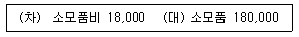
- ₩80,000
- ₩120,000
- ₩280,000
- ₩300,000
- ₩500,000
(정답률: 27%)
44. 시산표에 관한 설명으로 옳은 것은?
- 시산표는 재무상태표와 포괄손익계산서를 작성하기 위한 필수적인 장부이다.
- 시산표는 각 계정과목의 잔액을 사용하여 작성할 수 있다.
- 수정전시산표에는 선급비용과 선수수익의 계정과목이 나타나지 않는다.
- 발생된 거래를 분개하지 않은 경우 시산표의 차변합계와 대변합계는 일치하지 않는다.
- 수정후시산표에는 수익과 비용 계정과목이 나타날 수 없다.
(정답률: 45%)
45. 다음 중 유용한 재무정보의 근본적 질적특성은?
- 일관성
- 목적적합성
- 검증가능성
- 비교가능성
- 이해가능성
(정답률: 32%)
46. 다음의 자료를 사용하여 계산된 기말이익잉여금은?
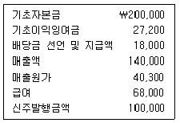
- ₩27,200
- ₩31,700
- ₩40,900
- ₩50,600
- ₩61,200
(정답률: 25%)
47. 20×1년 말 (주)한국이 작성한 재무제표에서 다음과 같은 오류가 발견되었다. 이들 오류가 당기순이익에 미치는 영향은?
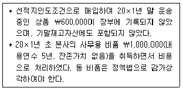
- ￦400,000 과소계상
- ￦800,000 과소계상
- ￦1,000,000 과소계상
- ￦1,400,000 과소계상
- ￦1,600,000 과소계상
(정답률: 28%)
48. 다음의 자료를 사용하여 계산된 기말매출채권은? (단, 기초 및 기말대손충당금은 없다.)
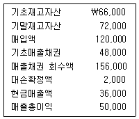
- ₩18,000
- ₩20,000
- ₩114,000
- ₩128,000
- ₩164,000
(정답률: 16%)
49. (주)한국의 20×1년 6월 말 장부상 당좌예금은 ￦62,000이며 은행에서 발행한 당좌예금잔액증명서의 금액은 ￦66,000이다. 이 둘 차이의 원인을 확인한 결과 다음과 같은 사항을 발견하였다. (주)한국의 20×1년 6월 말 올바른 당좌예금은?
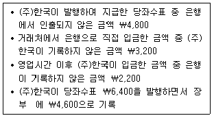
- ￦61,600
- ￦62,400
- ￦63,000
- ￦63,400
- ￦65,200
(정답률: 34%)
50. 다음의 거래에 대한 분개 중 옳은 것은?
- 비품 ￦70,000을 외상으로 구입하고 대금은 2개월 후에 지급하기로 하였다.
(차) 비품 70,000. (대) 매입채무 70,000 - 임차료 ￦30,000을 당좌수표를 발행하여 지급하였다.
(차) 임차료 30,000, (대) 당좌예금 30,000 - 상품 ￦40,000을 판매하고 판매대금은 1개월 후에 회수하기로 하였다.
(차) 미수금 40,000, (대) 매출채권 40,000 - 영업에 사용할 차량 ￦100,000을 외상으로 구입하였다.
(차) 상품 100,000, (대) 선급금 100,000 - 은행으로부터 현금 ￦80,000을 단기 차입하였다.
(차) 단기차입금 80,000, (대) 현금 80,000
(정답률: 23%)
51. 회계추정의 변경에 해당하지 않는 것은?
- 유형자산의 잔존가치를 취득원가의 10%에서 5%로 변경하는 경우
- 유형자산의 내용연수를 5년에서 10년으로 변경하는 경우
- 유형자산의 감가상각방법을 정률법에서 정액법으로 변경하는 경우
- 제품보증충당부채의 적립비율을 매출액의 1%에서 2%로 변경하는 경우
- 재고자산의 단위원가 결정방법을 선입선출법에서 총평균법으로 변경하는 경우
(정답률: 38%)
52. 다음 중 회계에 관한 설명으로 옳지 않은 것은?
- 회계는 경영자의 수탁책임을 보고하는 기능을 수행한다.
- 관리회계는 기업내부정보이용자가 의사결정을 하는데 유용한 정보를 제공한다.
- 최고경영자의 사임은 중요한 경제적 사건이지만 회계거래는 아니다.
- 회계정보는 거래의 인식 및 측정, 처리, 보고의 단계를 거쳐 산출된다.
- 재무제표 작성을 위한 기본가정에는 계속기업과 현금주의가 있다.
(정답률: 32%)
53. (주)한국은 20×1년 말 현금 ￦100,000을 보유하고 있는 상태에서 유동비율은 180%이고 당좌비율은 90%이다. 20×1년 말 (주)한국이 단기차입금 ￦100,000을 상환하기 위해 현금을 모두 사용할 경우 유동비율과 당좌비율에 미치는 영향은?
- 유동비율 증가, 당좌비율 증가
- 유동비율 증가, 당좌비율 감소
- 유동비율 감소, 당좌비율 증가
- 유동비율 감소, 당좌비율 감소
- 유동비율 불변, 당좌비율 불변
(정답률: 17%)
54. (주)한국은 20×1년 1월 1일 기계장치를 ￦2,000,000에 구입하여 원가모형을 적용하기로 하였다. 이 기계장치의 내용연수는 5년이고 잔존가치는 ￦200,000으로 추정되며 월할기준을 적용하여 정액법으로 감가상각한다. (주)한국이 20×3년 6월 30일에 동 자산을 ￦800,000에 매각할 경우 유형자산처분손익은?
- 유형자산처분이익 ￦80,000
- 유형자산처분이익 ￦100,000
- 유형자산처분손실 ￦100,000
- 유형자산처분손실 ￦200,000
- 유형자산처분손실 ￦300,000
(정답률: 18%)
55. (주)한국은 수술용기계(취득원가가 ￦1,200,000이고 감가상각누계액은 ￦300,000)가 진부화되어 손상차손을 인식하려고 한다. 이 기계의 순공정가치는 ￦400,000이고 사용가치는 ￦500,000이다. (주)한국이 인식할 수술용기계의 손상차손은?
- ₩400,000
- ₩500,000
- ₩600,000
- ₩800,000
- ₩900,000
(정답률: 25%)
56. (주)한국의 창고에 화재가 발생하여 재고자산의 일부가 소실되었다. 남아있는 재고자산의 순실현가능가치는 ￦20,000이다. (주)한국의 기초재고자산은 ￦400,000이고 화재 발생 직전까지 재고자산 매입액은 ￦1,600,000이며 매출액은 ￦2,000,000이었다. (주)한국의 과거 3년 평균 매출총이익률이 25%일 경우 재고자산 화재손실 추정액은?
- ￦380,000
- ￦400,000
- ￦440,000
- ￦480,000
- ￦500,000
(정답률: 39%)
57. (주)한국은 20×1년 12월 10일 주식 A를 취득하였다. 취득 이후 주식 A의 공정가치와 순매각금액은 다음과 같다. 취득시 주식 A를 단기매매금융자산 혹은 매도가능금융자산으로 분류하여 회계처리할 경우 당기순이익에 미치는 영향은?
- 단기매매금융자산으로 분류할 경우 20×1년 당기순이익에 미치는 영향은 없다.
- 단기매매금융자산으로 분류할 경우 20×2년 당기순이익은 ￦50,000 증가한다.
- 매도가능금융자산으로 분류할 경우 20×1년 당기순이익은 ￦50,000 감소한다.
- 매도가능금융자산으로 분류할 경우 20×2년 당기순이익은 ￦40,000 증가한다.
- 금융자산의 분류에 관계없이 20×1년 당기순이익에 미치는 영향은 동일하다.
(정답률: 15%)
58. (주)한국은 제품생산을 위하여 외국에서 선적지인도조건으로 공작기계를 ￦25,000에 수입하면서 운송비 ￦5,000과 관세 ￦4,000을 지불했다. 공작기계를 수입한 직후 시운전 중에 이 기계의 중대한 결함을 발견하였다. 이에 대해 판매처로부터 ￦3,000을 환불받기로 하고 (주)한국이 ￦3,000을 지출하여 결함을 복구하였다. 이 공작기계의 취득원가는?
- ₩25,000
- ₩29,000
- ₩31,000
- ₩34,000
- ₩37,000
(정답률: 32%)
59. (주)한국의 20×1년 상품 A의 거래내역은 다음과 같다. 상품 A에 대하여 계속기록법에 의한 선입선출법을 사용할 경우 20×1년 매출원가는?
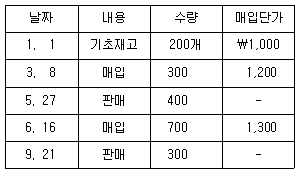
- ￦360,000
- ￦440,000
- ￦650,000
- ￦700,000
- ￦820,000
(정답률: 36%)
60. (주)한국의 20×1년 매출액은 ￦1,000,000이고 매출원가는 ￦630,000이다. 총매입액은 ￦600,000이며 매입환출 및 에누리는 ￦60,000이다. 기초재고자산이 ￦400,000일 경우 기말재고자산은?
- ￦240,000
- ￦275,000
- ￦300,000
- ￦310,000
- ￦335,000
(정답률: 32%)
61. 무형자산의 회계처리에 관한 설명으로 옳지 않은 것은?
- 무형자산을 최초로 인식할 때에는 원가로 측정한다.
- 내용연수가 비한정인 무형자산에 대해서는 상각을 하지 않는다.
- 최초에 비용으로 인식한 무형항목에 대한 지출은 그 이후에 무형자산의 원가로 인식할 수 없다.
- 내부적으로 창출한 브랜드와 고객목록은 무형자산으로 인식한다.
- 무형자산의 상각방법은 자산의 경제적효익이 소비되는 형태를 반영한 방법이어야 한다.
(정답률: 34%)
62. (주)한국은 20×1년 초에 ￦800,000의 건설공사를 수주하였다. 공사기간은 3년, 총계약원가는 ￦640,000이 될 것으로 예상되며 20×1년 중 ￦80,000의 공사원가가 발생하였다. (주)한국이 진행기준에 따라 수익을 인식할 경우 20×1년 공사수익은?
- ₩10,000
- ₩30,000
- ₩70,000
- ₩100,000
- ₩200,000
(정답률: 23%)
63. 재무제표에 관한 설명으로 옳지 않은 것은?
- 재무상태표는 일정시점의 경제적 자원과 그에 대한 청구권을 나타낸다.
- 포괄손익계산서는 반드시 비용을 기능별 분류방법으로 표시하여야 한다.
- 자본의 구성요소는 각 분류별 납입자본, 각 분류별 기타포괄손익의 누계액과 이익잉여금의 누계액 등을 포함한다.
- 포괄손익계산서에 포함되는 기타포괄손익 금액은 기말 장부마감을 통해 이익잉여금으로 대체되지 않는다.
- 현금흐름표는 기업의 활동을 영업활동, 투자활동, 재무활동으로 구분한 현금흐름으로 표시한다.
(정답률: 32%)
64. 다음의 자료를 사용하여 계산된 당기순이익과 총포괄이익은? (단, 법인세율은 30%이다.)
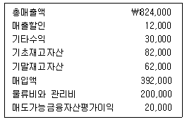
- 당기순이익 ₩155,000, 총포괄이익 ₩181,000
- 당기순이익 ₩167,000, 총포괄이익 ₩181,000
- 당기순이익 ₩173,000, 총포괄이익 ₩175,000
- 당기순이익 ₩161,000, 총포괄이익 ₩175,000
- 당기순이익 ₩161,000, 총포괄이익 ₩181,000
(정답률: 19%)
65. 수익과 비용의 인식에 관한 설명으로 옳지 않은 것은? (문제 오류로 실제 시험에서는 4, 5번이 정답처리 되었습니다. 여기서는 4번을 누르면 정답 처리 됩니다.)
- 수익은 받았거나 받을 대가의 공정가치로 측정한다.
- 용역의 제공으로 인한 수익은 용역제공거래의 결과를 신뢰성 있게 추정할 수 있을 때 보고기간 말에 그 거래의 진행률에 따라 인식한다.
- 비용은 발생된 원가와 특정 수익항목의 가득 간에 존재하는 직접적인 관련성을 기준으로 인식한다.
- 수익은 거래와 관련된 경제적효익의 유입가능성이 높은 경우에만 인식한다.
- 미래경제적효익이 불확실한 지출의 경우 불확실성이 해소될 때까지 비용의 인식을 이연할 수 있다.
(정답률: 38%)
66. 다음의 자료를 사용하여 계산된 영업활동으로 인한 현금흐름은?
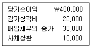
- ￦400,000
- ￦420,000
- ￦450,000
- ￦460,000
- ￦470,000
(정답률: 32%)
67. 다음의 자료를 사용하여 계산된 재무상태표상의 자본총계는?
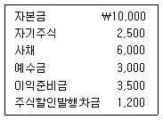
- ￦9,800
- ￦11,000
- ￦12,300
- ￦13,500
- ￦14,600
(정답률: 19%)
68. 다음 중 자본총계에 영향을 주는 거래는?
- 현물출자
- 주식배당
- 무상증자
- 주식분할
- 주식병합
(정답률: 30%)
69. 총자산회전율과 매출채권회전율은 각각 1.5회와 2회이며 매출액순이익률이 3%일 경우 총자산순이익률은?
- 1.5%
- 2.0%
- 4.5%
- 6.0%
- 9.0%
(정답률: 20%)
70. 부채에 관한 설명으로 옳은 것은?
- 우발부채는 재무상태표에 보고한다.
- 상품매입으로 인한 채무를 인식하는 계정과목은 미지급금이다.
- 부채는 결산일로부터 상환기일에 따라 유동부채와 비유동부채로 분류할 수 있다.
- 충당부채는 지급금액이 확정된 부채이다.
- 선수수익은 금융부채에 해당한다.
(정답률: 12%)
71. (주)한국은 20×1년 7월 1일 액면금액 ₩2,000,000(표시이자율 연 9%, 만기 5년)의 사채를 ₩1,950,000에 발행하였다. 이자는 매년 6월 30일에 지급한다. 발행시부터 만기까지 (주)한국이 인식할 총이자비용은?
- ₩450,000
- ₩500,000
- ₩850,000
- ₩900,000
- ₩950,000
(정답률: 23%)
72. 사채에 관한 설명으로 옳지 않은 것은?
- 사채의 표시이자율은 사채소유자에게 현금으로 지급해야 할 이자계산에 사용된다.
- 사채할인발행차금은 발행금액에서 차감하는 형식으로 표시된다.
- 사채발행비는 발행금액에서 차감된다.
- 사채발행시 사채의 유효이자율이 표시이자율보다 낮은 경우 사채는 할증발행된다.
- 사채가 할인발행되는 경우 사채발행자가 사채만기일에 상환해야 하는 금액은 발행금액보다 크다.
(정답률: 0%)
73. 한국아파트는 불우이웃돕기 기금마련을 위한 행사를 개최하였으며 판매수익은 ￦25,000이었다. 행사에 소요된 직접재료원가는 ￦12,000이고 직접노무원가는 ￦3,000이며 간접원가는 기본원가(prime costs)의 40%이다. 이 행사의 이익은? (단, 모든 재고는 없다.)
- ￦2,000
- ￦3,000
- ￦4,000
- ￦5,000
- ￦6,000
(정답률: 34%)
74. (주)한국의 20×1년 제조와 관련된 원가자료는 다음과 같다. 기초제품재고액과 매출원가가 각각 ￦15,000과 ￦45,000일 경우 (주)한국의 20×1년 기말제품재고액은?
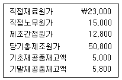
- ￦20,000
- ￦21,600
- ￦25,000
- ￦26,600
- ￦31,000
(정답률: 27%)
75. 한국아파트는 방치된 아동용 자전거 60대와 어른용 자전거 40대를 수거하였으며, 이와 관련하여 총 ￦1,000의 비용이 발생하였다. 관리사무소장은 자전거를 즉시 처분하는 방안(‘즉시 처분’이라 함)과 바퀴ㆍ몸체를 분리해서 처분하는 방안(‘분리 처분’이라 함) 가운데 하나를 결정하려고 한다. 다음의 자료를 사용할 경우 이익을 극대화하는 의사결정은?
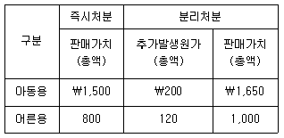
- 모든 자전거를 즉시 처분한다.
- 아동용 자전거는 분리 처분하고 어른용 자전거는 즉시 처분한다.
- 아동용 자전거는 즉시 처분하고 어른용 자전거는 분리 처분한다.
- 모든 자전거를 분리 처분한다.
- 모든 자전거를 즉시 처분하거나 분리 처분하여도 의사결정에는 차이가 없다.
(정답률: 34%)
76. (주)한국은 20×1년 초에 설립되었으며, 20×1년 생산ㆍ판매자료는 다음과 같다. 전부원가계산에 의한 영업이익과 변동원가계산에 의한 영업이익의 차이는? (단, 재공품은 없다.)
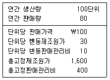
- ￦320
- ￦340
- ￦360
- ￦380
- ￦400
(정답률: 23%)
77. (주)한국은 기계가동시간을 기준으로 제조간접원가 예정배부율을 계산하고 있다. (주)한국의 20×1년 정상기계가동시간은 10,000시간이고 제조간접원가 예산은 ￦330,000이다. 20×1년 실제기계가동시간은 11,000시간이고 제조간접원가 실제발생액은 ￦360,000이다. 20×1년 제조간접원가 배부차이 조정 전 매출원가가 ￦5,220,000일 경우 매출원가조정법으로 배부차이를 조정한 후의 매출원가는?
- ￦5,187,000
- ￦5,190,000
- ￦5,217,000
- ￦5,223,000
- ￦5,250,000
(정답률: 28%)
78. (주)한국은 선입선출법에 의한 종합원가계산을 채택하고 있다. 재료는 공정 초에 전량 투입되며, 가공원가는 전체 공정에 걸쳐 균등하게 발생한다. 20×1년 6월 월초재공품은 3,000단위(가공원가 완성도 20%), 당월완성품은 18,000단위, 월말재공품은 2,000단위(가공원가 완성도 40%)이다. 20×1년 6월 재료원가와 가공원가의 완성품환산량은?
- 재료원가 17,000단위, 가공원가 16,400단위
- 재료원가 17,000단위, 가공원가 18,200단위
- 재료원가 20,000단위, 가공원가 16,800단위
- 재료원가 20,000단위, 가공원가 18,800단위
- 재료원가 23,000단위, 가공원가 21,200단위
(정답률: 27%)
79. (주)한국의 20×1년 손익분기점은 500단위이고 제품 단위당 변동원가는 ￦300이며 연간 고정원가는 ￦200,000이다. 단위당 판매가격은?
- ￦400
- ￦500
- ￦600
- ￦700
- ￦800
(정답률: 16%)
80. (주)한국은 20×1년 6월 결합공정을 거쳐 결합제품 A와 B를 각각 500단위와 400단위 생산하였다. 분리점에서 결합제품 A와 B의 단위당 판매가격은 각각 ￦200과 ￦150이다. 분리점에서의 판매가치를 기준으로 결합제품 A에 배분된 결합원가가 ￦20,000일 경우 결합원가의 총액은? (단, 재공품은 없다.)
- ￦32,000
- ￦33,000
- ￦34,000
- ￦35,000
- ￦36,000
(정답률: 16%)
3과목: 공동주택시설개론
81. 승용 엘리베이터의 정원 산정시 기준이 되는 1인당 하중은? (2024년 6월 문제 정답 오류신고 수정 신고자: rennet)
- 60kg
- 65kg
- 70kg
- 75kg
- 80kg
(정답률: 48%)
82. 건축구조를 건식구조와 습식구조로 구분할 경우, 다음 중 습식구조에 속하지 않는 것은?
- 벽돌구조
- 철골구조
- 블록구조
- 철근콘크리트구조
- 철골철근콘크리트구조
(정답률: 48%)
83. 건축구조와 관련된 용어의 설명으로 옳지 않은 것은?
- 구조내력이란 구조부재 및 이와 접하는 부분 등이 견딜 수 있는 부재력을 말한다.
- 라멘(rahmen) 구조는 기둥과 보로 이루어진 골조가 건물의 하중을 지지하는 구조이다.
- 캔틸레버(cantilever) 보는 한 쪽만 고정시키고 다른 쪽은 돌출시켜 하중을 지지하도록 한 구조이다.
- 고정하중은 구조체에 지속적으로 작용하는 수직하중으로 구조부재에 부착된 비내력 부분과 각종 설비 등의 중량은 제외된다.
- 활하중은 건물의 사용 및 점용에 의해서 발생되는 하중으로 사람, 가구, 이동칸막이, 창고의 저장물, 설비기계 등의 하중을 말한다.
(정답률: 56%)
84. 건축물의 부동침하 원인으로 옳지 않은 것은?
- 건축물의 일부에만 지정을 한 경우
- 지하수위가 부분적으로 변경되는 경우
- 건축물이 이질 지반에 걸쳐 있는 경우
- 지하의 일부 구간에 매설물이 있는 경우
- 각각의 독립기초판 지내력의 차이가 없는 경우
(정답률: 65%)
85. 블록쌓기에 관한 설명으로 옳지 않은 것은?
- 보강블록쌓기의 세로줄눈은 통줄눈으로 한다.
- 줄눈은 특별한 지정이 없는 경우 10mm 두께로 한다.
- 블록의 하루 쌓기 높이는 1.8m 이내를 표준으로 한다.
- 가로줄눈 모르타르는 블록의 중간살을 제외한 양면살 전체에 발라 수평이 되게 쌓는다.
- 줄기초, 연결보 및 바닥판 등 블록을 쌓는 밑바탕은 쌓기 전에 정리 및 청소를 하고 물축임을 한다.
(정답률: 50%)
86. 철골구조와 관련된 용어의 설명으로 옳지 않은 것은?
- 뒷댐재는 용접시 루트간격 아래에 대는 판을 말한다.
- 고력볼트의 접합력은 볼트의 장력에 의해 발생되는 마찰력이 좌우한다.
- 턴버클(turn buckle)은 스터드 용접시 용접불량을 방지하기 위해 사용된다.
- 엔드탭(end tab)은 용접의 시점과 종점에 용접불량을 방지하기 위해 설치하는 금속판이다.
- 스캘럽(scallop)은 용접선이 교차할 경우 이를 피하기 위하여 오목하게 파 놓은 것이다.
(정답률: 40%)
87. 콘크리트 공사시 각종 줄눈(joint)에 관한 설명으로 옳지 않은 것은?
- 콜드 조인트(cold joint)란 신ㆍ구 타설 콘크리트의 경계면에 발생되기 쉬운 이어치기의 불량 부위를 말한다.
- 신축줄눈(expansion joint)이란 구조물이 장대한 경우 수축, 팽창에 따른 변위를 흡수하기 위해 설치하는 줄눈을 말한다.
- 시공줄눈(construction joint)이란 시공상의 여건 등에 의해 부어넣기 작업을 일시적으로 중단해야 하는 경우에 설치하는 줄눈을 말한다.
- 조절줄눈(control joint)이란 콘크리트 구조체와 조적조가 접합되는 부위에 설치하는 줄눈을 말한다.
- 지연줄눈(delay joint)이란 콘크리트의 침하나 수축의 편차가 크게 예상되는 경우에 일정 기간 방치하였다가 콘크리트를 추가적으로 타설하는 부위를 말한다.
(정답률: 27%)
88. 콘크리트의 압축강도에 관한 설명으로 옳지 않은 것은?
- 습윤환경보다 건조환경에서 양생된 콘크리트의 강도가 낮다.
- 콘크리트 배합시 사용되는 물의 양이 많을수록 강도는 저하된다.
- 현장 타설 구조체 콘크리트는 양생온도가 높을수록 강도 발현이 촉진된다.
- 시험용 공시체의 크기가 클수록, 재하속도가 느릴수록 강도는 커진다.
- 타설 후 초기재령에 동결된 콘크리트는 그 후 적절한 양생을 하여도 강도가 회복되기 어렵다.
(정답률: 37%)
89. 철근콘크리트공사에서 콘크리트의 타설 후 가장 먼저 나타날 수 있는 성능저하현상은?
- 염해현상
- 화학적 침식
- 알칼리골재반응
- 플라스틱 균열현상
- 탄산화(중성화)현상
(정답률: 48%)
90. 특수콘크리트에 관한 설명으로 옳지 않은 것은?
- 서중콘크리트는 일평균기온이 20℃를 넘는 시기에 타설되는 콘크리트이다.
- 한중콘크리트는 일평균기온이 4℃ 이하의 낮은 온도에서 타설되는 콘크리트이다.
- 고유동콘크리트는 재료분리에 대한 저항성을 유지하면서 유동성을 현저하게 높여 밀실한 충전이 가능한 콘크리트이다.
- 매스콘크리트는 수화열에 의한 균열의 고려가 필요한 콘크리트이다.
- 수밀콘크리트는 수압이 구조체에 직접적인 영향을 미치는 구조물에서 방수, 방습 등을 목적으로 만들어진 흡수성과 투수성이 작은 콘크리트이다.
(정답률: 57%)
91. 개량 아스팔트시트 방수공사에 관한 설명으로 옳지 않은 것은?
- 개량 아스팔트시트의 상호 겹침폭은 길이 및 폭 방향 모두 100mm 이상으로 한다.
- 개량 아스팔트시트의 치켜올림 끝부분은 누름철물을 이용하여 고정하고 실링재로 처리한다.
- 개량 아스팔트시트 붙이기는 용융 아스팔트를 시트의 뒷면과 바탕에 균일하게 도포하여 밀착시킨다.
- 오목 및 볼록 모서리 부분은 일반 평면부에서의 개량 아스팔트시트 붙이기에 앞서 폭 200mm 정도의 덧붙임용 시트로 처리한다.
- 지하외벽의 개량 아스팔트시트 붙이기는 미리 개량 아스팔트시트를 2m 정도로 재단하여 시공하고, 높이가 2m 이상인 벽은 같은 작업을 반복한다.
(정답률: 39%)
92. 기초판의 형식에 따른 분류에 속하지 않는 것은?
- 독립기초
- 복합기초
- 직접기초
- 연속기초
- 온통기초
(정답률: 56%)
93. 벽돌조 복원 및 청소공사에 관한 설명으로 옳지 않은 것은?
- 벽돌면의 물청소는 뻣뻣한 솔로 물을 뿌려가며 긁어내린다.
- 산세척을 실시하는 경우 벽돌을 물축임 한 후에 5% 이하의 묽은 염산을 사용한다.
- 줄눈 속에 남아있는 찌꺼기, 흙, 모르타르 조각 등은 완전히 제거한다.
- 벽돌면의 청소는 위에서부터 아래로 내려가며 시행하며, 개구부는 적절한 방수막으로 덮어야 한다.
- 샌드 블라스팅, 그라인더, 마사포의 기계적인 방법을 사용하는 경우에는 시험청소 후 검사를 받아 담당원의 승인을 받은 후 본공사에 적용할 수 있다.
(정답률: 50%)
94. 타일에 관한 설명으로 옳지 않은 것은?
- 타일의 흡수율은 자기질이 석기질보다 작다.
- 도기질 타일은 불투명하며, 두드리면 탁음이 난다.
- 타일의 최종 소성온도는 자기질이 도기질보다 높다.
- 바닥용 미끄럼방지 타일에는 주로 시유타일을 사용한다.
- 폴리싱 타일은 고온고압으로 소성한 자기질 무유타일의 표면을 연마 처리한 것이다.
(정답률: 41%)
95. 콘크리트 바탕에 시멘트모르타르 미장 바름을 할 경우 각 부위별 전체 바름두께의 대소 관계로 옳은 것은? (단, 전체 바름두께는 초벌, 재벌, 정벌 바름두께 표준의 합이다.)
- 바닥 > 외벽 > 내벽 > 천장
- 바닥 = 외벽 > 내벽 = 천장
- 바닥 = 외벽 > 내벽 > 천장
- 바닥 > 외벽 = 내벽 > 천장
- 바닥 > 외벽 = 내벽 = 천장
(정답률: 43%)
96. 도장공사에 관한 설명으로 옳지 않은 것은?
- 유성페인트는 건성유와 안료를 희석제로 섞어 만든 도료로서 목부 및 철부에 사용된다.
- 합성수지페인트는 인공의 화합물을 이용하여 만든 도료로서 콘크리트나 플라스터 면 등에 사용된다.
- 본타일은 모르타르면에 스프레이를 이용하여 뿜칠도장으로 요철모양을 형성한 후 마감처리한 것이다.
- 수성페인트는 안료를 물에 용해하여 수용성 교착제와 혼합하여 제조한 도료로서 모르타르나 회반죽 등의 바탕에 사용된다.
- 에나멜페인트는 휘발성 용제나 지방유에 각종 수지를 용해시켜 제조한 도료로서 주로 목재의 무늬를 나타내기 위하여 사용된다.
(정답률: 40%)
97. 시트방수공법의 특징에 관한 설명으로 옳지 않은 것은?
- 상온시공이 용이하다.
- 아스팔트 방수보다 공사기간이 짧다.
- 바탕돌기에 의한 시트의 손상이 우려된다.
- 아스팔트 방수보다 바탕균열저항성이 작고, 경제적이다.
- 열을 사용하지 않는 시공이 가능하다.
(정답률: 45%)
98. H 형강의 표시방법으로 옳은 것은?
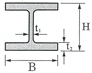
- H-B×H×t1×t2
- H-t1×t2×B×H
- H-H×B×t1×t2
- H-H×t1×B×t2
- H-B×t2×H×t1
(정답률: 32%)
99. 창호 및 유리공사와 관련된 재료의 설명으로 옳지 않은 것은?
- 접합유리는 2장 이상의 판유리 사이에 접합필름을 삽입하여 가열 압착한 것이다.
- 백업재는 실링 시공시 부재와 유리면 사이에 충전하여 유리고정 등을 하는 자재이다.
- 구조 가스켓(gasket)은 건(gun)형태의 도구로 유리 사이에 시공하는 자재이며, 정형과 부정형으로 나뉜다.
- Low-E 유리는 일반유리에 얇은 금속막을 코팅하여 열의 이동을 극소화시켜 에너지의 절약을 도모한 것이다.
- 열선반사유리는 판유리 한쪽 면에 열선반사를 위한 얇은 금속산화물 코팅막을 형성시켜 반사성능을 높인 것이다.
(정답률: 25%)
100. 건축적산시 타일의 할증률로 옳지 않은 것은?
- 자기타일 : 5%
- 도기타일 : 3%
- 리놀륨타일 : 5%
- 모자이크타일 : 3%
- 아스팔트타일 : 5%
(정답률: 37%)
101. 적산 및 견적과 관련된 용어의 설명으로 옳지 않은 것은?
- 일반관리비는 기업 유지를 위한 관리활동 부문의 비용이다.
- 직접재료비는 당해 공사목적물의 실체를 형성하는데 소요되는 재료비이다.
- 재료의 정미량은 설계도서에 표시된 치수에 의해 산출된 수량이다.
- 품셈은 어떤 물체를 인력이나 기계로 만드는데 들어가는 단위당 노력 및 재료의 수량이다.
- 견적은 공사에 필요한 재료 및 품을 구하는 기술 활동이며, 적산은 공사량에 단가를 곱하여 공사비를 구하는 기술 활동이다.
(정답률: 58%)
102. 배수트랩에 관한 설명으로 옳지 않은 것은?
- 구조상 수봉식이 아니거나 가동부분이 있는 것은 바람직하지 않다.
- 이중트랩은 악취를 효과적으로 차단하고, 배수를 원활하게 하는 효과가 있다.
- 트랩의 가장자리와 싱크대 또는 바닥 마감 부분의 사이는 내수성 충전재로 마무리한다.
- P트랩에서 봉수 수면이 디프(dip)보다 낮은 위치에 있으면 하수 가스의 침입을 방지할 수 없다.
- 정해진 봉수깊이 및 봉수면을 갖도록 설치하고 필요한 경우 봉수의 동결방지 조치를 한다.
(정답률: 35%)
103. 건축물의 에너지절약설계기준에 따른 용어의 정의로 옳지 않은 것은?
- ‘수용률’은 부하설비 용량 합계에 대한 최대 수용전력의 백분율로 나타낸다.
- ‘역률개선용콘덴서’는 역률을 개선하기 위하여 변압기 또는 전동기 등에 직렬로 설치하는 콘덴서이다.
- ‘일괄소등스위치’는 층 및 구역 단위 또는 세대 단위로 설치되어 층별 또는 세대 내의 조명 등을 일괄적으로 켜고 끌 수 있는 스위치이다.
- ‘비례제어운전’은 기기의 출력값과 목표값의 편차에 비례하여 입력량을 조절하여 최적운전상태를 유지할 수 있도록 운전하는 방식을 말한다.
- ‘이코노마이저시스템’은 중간기 또는 동계에 발생하는 냉방부하를 실내기준온도보다 낮은 도입 외기에 의하여 제거 또는 감소시키는 시스템을 말한다.
(정답률: 43%)
104. 급수방식에 관한 설명으로 옳지 않은 것은?
- 압력탱크방식은 급수압력이 일정하게 유지되지 않는 단점이 있다.
- 펌프직송방식과 압력탱크방식은 고가수조를 설치하지 않아도 급수가 가능하다.
- 펌프직송방식에서는 펌프의 회전수 제어를 위해서 인버터 제어방식 등이 이용된다.
- 고가수조방식에서는 고층부 수전과 저층부 수전의 토출 압력이 동일하다.
- 수도직결방식은 시설비 및 위생적인 측면에서 유리하나, 단수 시 급수가 불가능하다는 단점이 있다.
(정답률: 47%)
1⑤. 급탕설비에 관한 설명으로 옳은 것은?
- 급탕순환펌프는 급탕사용기구에 필요한 토출압력의 공급을 주목적으로 한다.
- 급탕배관과 팽창탱크 사이의 팽창관에는 차단밸브와 체크밸브를 설치하여야 한다.
- 직접가열방식은 증기 또는 온수를 열원으로 하여 열교환기를 통해 물을 가열하는 방식이다.
- 역환수배관 방식으로 배관을 구성할 경우 유량이 균등하게 분배되지 않으므로 각 계통마다 차압밸브를 설치한다.
- 헤더공법을 적용할 경우 세대 내에서 사용 중인 급탕기구의 토출압력은 다른 기구의 사용에 따른 영향을 적게 받는다.
(정답률: 27%)
106. 건축물의 에너지절약설계기준을 적용받는 아파트의 난방설비에 관한 설명으로 옳지 않은 것은?
- 건물 난방설비 용량의 50% 이상을 중앙집중식으로 설치하는 경우 중앙집중식 난방 건물로 본다.
- 난방설비를 중앙집중 난방방식으로 하는 아파트의 각 세대에는 난방(적산)열량계를 설치하여야 한다.
- 보일러의 대수분할운전은 보일러를 여러 대 설치하여 부하상태에 따라 최적 운전상태를 유지할 수 있도록 운전하는 방식을 말한다.
- 각 실별 또는 난방 존(zone)마다 별도의 실내 자동온도조절장치를 설치하여야 하나, 전용면적 60m2 이하인 경우는 적용하지 않을 수 있다.
- 난방방식으로 지역난방 공급방식을 채택할 경우에는 지식경제부 고시 "집단에너지시설의 기술기준"에 의하여 난방장치의 용량을 계산할 수 있다.
(정답률: 36%)
107. 배수수직관 내 압력변동을 완화하기 위한 목적으로 배수수직관과 통기수직관을 연결하는 통기관은?
- 각개통기관
- 루프통기관
- 신정통기관
- 결합통기관
- 습윤통기관
(정답률: 45%)
108. 플러시 밸브식 대변기를 사용하는 경우 역사이펀 작용으로 인하여 오수가 급수관 내로 역류되는 것을 방지하기 위하여 사용하는 기구는?
- 드렌처(drencher)
- 스트레이너(strainer)
- 가이드 베인(guide vane)
- 스팀 사이렌서(steam silencer)
- 진공 브레이커(vacuum breaker)
(정답률: 50%)
109. 배관재료 및 용도에 관한 설명으로 옳지 않은 것은?
- 플라스틱관은 내식성이 있으며, 경량으로 시공성이 우수하다.
- 폴리부틸렌관은 무독성 재료로서 상수도용으로 사용이 가능하다.
- 가교화 폴리에틸렌관은 온수 온돌용으로 사용이 가능하다.
- 배수용 주철관은 건축물의 오배수 배관으로 사용이 가능하다.
- 탄소강관은 내식성 및 가공성이 우수하며, 관두께에 따라 K, L, M형으로 구분된다.
(정답률: 57%)
110. 오수의 BOD 제거율이 90%인 정화조에서 정화조로 유입되는 오수의 BOD 농도가 250ppm일 경우, 정화 후의 방류수 BOD 농도는?
- 25ppm
- 75ppm
- 125ppm
- 175ppm
- 225ppm
(정답률: 42%)
111. 배수수직관을 흘러 내려가는 다량의 배수에 의해 배수수직관 근처에 설치된 기구의 봉수가 파괴되었을 때, 이에 대한 원인과 관계가 깊은 것을 <보기>에서 모두 고른 것은?
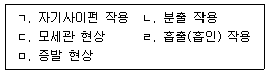
- ㄱ, ㄴ
- ㄴ, ㄷ
- ㄴ, ㄹ
- ㄱ, ㄷ, ㅁ
- ㄱ, ㄹ, ㅁ
(정답률: 56%)
112. 소방대가 건물 외벽 또는 외부에 있는 송수구를 통해 지하층 등의 천장에 설치되어 있는 헤드까지 송수하여 화재를 진압하는 소방시설은?
- 연결살수설비
- 소화용수설비
- 옥내소화전설비
- 옥외소화전설비
- 물분무소화설비
(정답률: 64%)
113. 스프링클러설비에 관한 설명으로 옳은 것은?
- 교차배관은 스프링클러헤드가 설치되어 있는 배관이며, 가지배관은 주배관으로부터 교차배관에 급수하는 배관이다.
- 폐쇄형 스프링클러설비의 헤드는 개별적으로 화재를 감지하여 개방되는 구조로 되어 있다.
- 폐쇄형 습식 스프링클러설비는 별도로 설치되어 있는 화재감지기에 의해 유수검지장치가 작동되어 물이 송수되는 구조로 되어 있다.
- 폐쇄형 건식 스프링클러설비는 헤드가 화재의 열을 감지하면 헤드를 막고 있던 감열체가 녹으면서 헤드까지 차 있던 물이 곧바로 뿌려지는 구조로 되어 있다.
- 폐쇄형 준비작동식 스프링클러설비는 헤드가 화재의 열을 감지하여 헤드를 막고 있던 감열체가 녹으면 압축공기 등이 빠져나가면서 배관계 도중에 있는 유수검지장치가 개방되어 물이 분출되는 구조로 되어 있다.
(정답률: 34%)
114. 가스설비에 관한 설명으로 옳지 않은 것은?
- 고(위)발열량 또는 총발열량은 연소시 발생되는 수증기의 잠열을 제외한 것이다.
- 도시가스의 공급압력 분류에서 고압은 게이지압력으로 1MPa 이상인 경우를 말한다.
- 가스계량기와 전기계량기 및 전기개폐기와의 거리는 60cm 이상을 유지해야 한다.
- 정압기는 가스 사용 기기에 적합한 압력으로 공급할 수 있도록 가스압력을 조정하는 기기이다.
- 발열량은 통상 1Nm3당의 열량으로 나타내는데, 여기에서 N은 표준상태를 나타내는 것으로, 가스에서의 표준상태란 0℃, 1atm을 말한다.
(정답률: 39%)
115. 난방방식에 관한 설명으로 옳지 않은 것은?
- 온수난방은 증기난방에 비해 난방기기의 크기를 작게 할 수 있다.
- 복사난방은 대류난방에 비해 실내의 상부와 하부의 온도차가 작아진다.
- 대류난방은 복사난방에 비해 실내설정온도에 이르기까지 걸리는 시간이 짧다.
- 증기난방에는 증기트랩 및 경우에 따라 감압밸브와 같은 부속기기가 필요하다.
- 100℃를 넘는 온수를 이용하여 난방을 할 때는 대기압을 초과하는 압력으로 배관계 전체를 가압할 필요가 있다.
(정답률: 65%)
116. 전기배선공사에 관한 설명으로 옳지 않은 것은?
- 플로어덕트공사는 옥내의 건조한 콘크리트 바닥 내에 매입할 경우에 사용된다.
- 라이팅덕트공사는 굴곡 장소가 많아서 금속관공사가 어려운 부분에 많이 사용된다.
- 버스덕트공사는 빌딩, 공장 등에서 비교적 큰 전류가 통하는 간선에 많이 사용된다.
- 합성수지몰드공사에서 합성수지몰드 안에는 원칙적으로 전선에 접속점이 없도록 해야 한다.
- 금속몰드공사는 철제 홈통의 바닥에 전선을 넣고 뚜껑을 덮는 배선방법이다.
(정답률: 56%)
117. 대형 공기조화기인 에어핸들링유닛(AHU, air handling unit)의 구성요소에 속하지 않는 것은?
- 송풍기
- 가습기
- 재생기
- 에어필터
- 냉온수코일
(정답률: 35%)
118. 냉동기에 관한 설명으로 옳은 것은?
- 2중효용 흡수식냉동기에는 응축기가 2개 있다.
- 흡수식냉동기에서 냉동이 이루어지는 부분은 응축기이다.
- 흡수식냉동기는 압축식냉동기에 비해 많은 전력이 소비된다.
- 압축식냉동기에서는 냉매가 팽창밸브를 통과하면서 고온고압이 된다.
- 증발기 및 응축기는 압축식냉동기와 흡수식냉동기를 구성하는 공통 요소이다.
(정답률: 34%)
119. 백본(back-bone), 방화벽, 워크그룹스위치 등과 같이 세대 내 홈게이트웨이와 단지서버 간의 통신 및 보안을 수행하는 것은?
- 월패드
- 원격제어기기
- 세대통합관리반
- 원격검침시스템
- 단지네트워크장비
(정답률: 57%)
120. 지능형 홈네트워크 설비 설치 및 기술기준에 관한 설명으로 옳지 않은 것은?
- 단지서버실의 면적은 3m2 이상으로 한다.
- 통신배관실의 바닥은 이중바닥방식으로 설치해야 한다.
- 원격제어가 가능한 조명제어기를 세대 안에 1구 이상 설치해야 한다.
- 방재실에는 방재실 내 장비들의 성능을 위한 항온ㆍ항습장치를 설치해야 한다.
- 가스감지기는 사용하는 가스가 LNG인 경우에는 천장 쪽에, LPG인 경우에는 바닥 쪽에 설치해야 한다.
(정답률: 56%)
따라서 정답은 "의사의 과실로 태내에서 사망한 태아는 그 의사에 대하여 손해배상청구권을 취득하지 못한다."입니다. 이는 판례에 의한 결론으로, 태아는 아직 출생하지 않았기 때문에 권리능력이 없다고 판단되어 의사에 대한 손해배상청구권을 취득하지 못한다는 것입니다.